CS180: Intro to Computer Vision and Computational Photography
Programming Project #2
Fun with Filters and Frequencies
Part 1.1: Convolution from scratch
The notebook implements convolution in two ways: a direct four-loop version and a padded two-loop version with a flipped kernel. This is the basis for all filtering operations in the project.
def convolution_four_loops(image, kernel):
im_height, im_width = image.shape
k_height, k_width = kernel.shape
output = np.zeros_like(image, dtype=float)
kernel_flipped = np.flip(kernel)
pad_height = k_height // 2
pad_width = k_width // 2
for row in range(im_height):
for col in range(im_width):
for k_row in range(k_height):
for k_col in range(k_width):
im_i = row + k_row - pad_height
im_j = col + k_col - pad_width
if im_i in range(0, im_height) and im_j in range(0, im_width):
output[row, col] += image[im_i, im_j] * kernel_flipped[k_row, k_col]
return outputdef convolution_two_loops(image, kernel):
im_height, im_width = image.shape
k_height, k_width = kernel.shape
output = np.zeros_like(image, dtype=float)
kernel_flipped = np.flip(kernel)
pad_height = k_height // 2
pad_width = k_width // 2
padded = np.pad(image, ((pad_height, pad_height), (pad_width, pad_width)), mode='constant')
for row in range(im_height):
for col in range(im_width):
patch = padded[row : row + k_height, col : col + k_width]
output[row, col] = np.sum(patch * kernel_flipped)
return outputUsing a 9x9 box filter on a grayscale selfie demonstrates the effect of local averaging. The notebook then compares the custom convolution to the SciPy implementation to validate correctness.
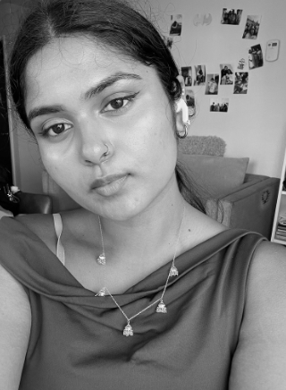
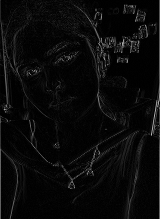
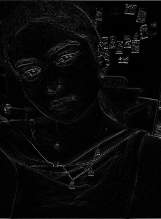
Part 1.2: Finite difference operator
To approximate derivatives in the image, the notebook uses the simple finite difference kernels:
D_x = np.array([[-1, 0, 1]])
D_y = np.array([[-1],
[0],
[1]])These were convolved with the cameraman image to estimate brightness changes in the x and y directions. The resulting gradient magnitude captures edge strength, while thresholding converts it into a binary edge map.
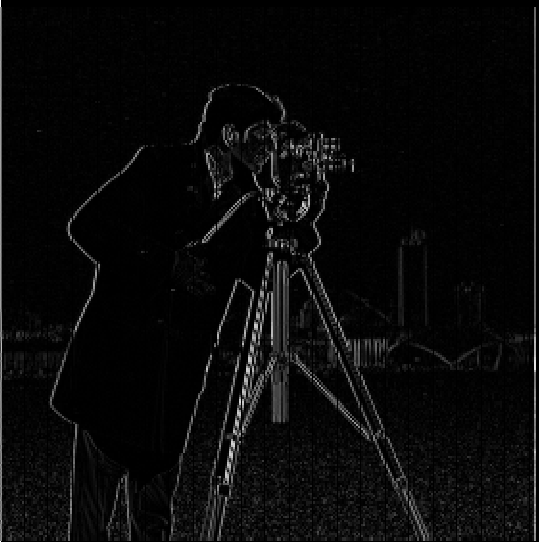
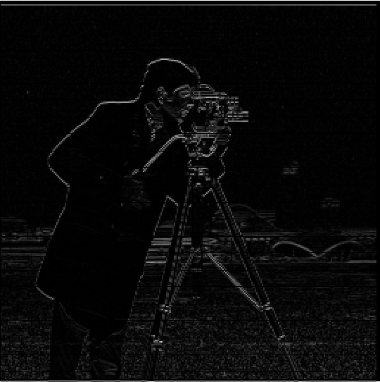
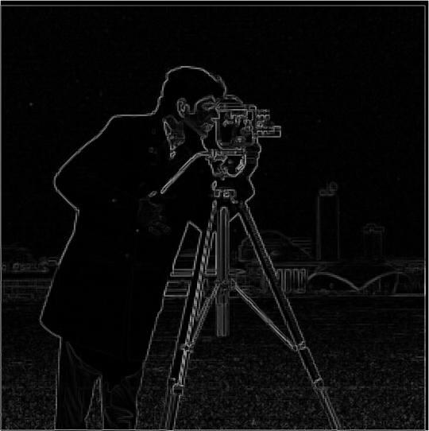
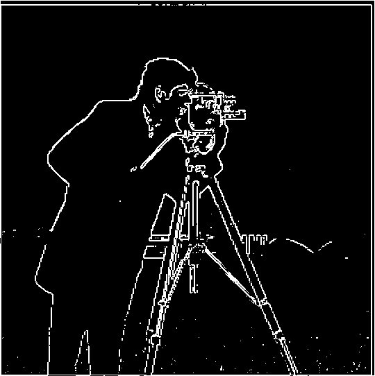
The threshold was chosen qualitatively to suppress noise while preserving the major image structures. With a threshold around 70, the edge map exposes the strongest contours without becoming overly noisy.
Part 1.3: Derivative of Gaussian (DoG)
The notebook notes that pure finite differences are noisy. A Gaussian blur smooths the image before differentiating, which produces cleaner edges. The notebook forms a 2D Gaussian kernel by taking the outer product of a 1D Gaussian kernel:
gaussian_1d = cv2.getGaussianKernel(5, 0)
gaussian_2d = gaussian_1d @ gaussian_1d.TAfter blurring the cameraman image, the derivative response is recomputed. The Gaussian-smoothed gradient gives less fragmented edges than the raw difference operator.
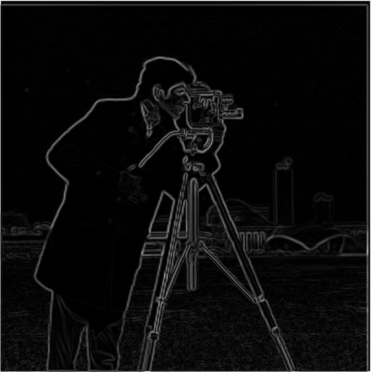
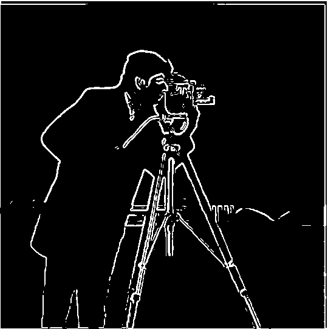
The final observation in the notebook is that the Gaussian-smoothed finite-difference output is effectively identical to the derivative-of-Gaussian result, confirming the associative property of convolution.
Part 2.1: Unsharp mask sharpening
The notebook defines a single-kernel unsharp mask based on the identity filter minus a Gaussian blur. This uses the idea that high frequencies often correspond to edges and detail, while low frequencies correspond to broad smooth areas.
def unsharp_mask(image, kernel_size=5, sigma =0, alpha=1.0):
gaussian_1d = cv2.getGaussianKernel(kernel_size, sigma)
G = gaussian_1d @ gaussian_1d.T
identity = np.zeros_like(G)
center = kernel_size // 2
identity[center, center] = 1
unsharp_kernel = (1 + alpha) * identity - alpha * G
return convolve2d(image, unsharp_kernel, mode='same', boundary='fill')Applied to the Taj Mahal image and a crying emoji, the sharpened output accentuates the edge content and brings out structure that is otherwise softened by the blur.
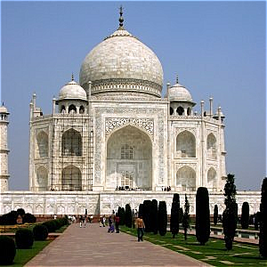
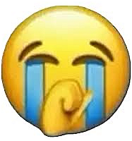
Part 2.2: Hybrid images
Hybrid images were created by combining a low-frequency image with a high-frequency image. The notebook defines this as:
low_pass = convolve2d(low_image, G, mode='same', boundary='fill')
blurred_high = convolve2d(high_image, G, mode='same', boundary='fill')
high_pass = high_image - blurred_high
hybrid = low_pass + high_weight * high_passThree hybrid examples were assembled using aligned image pairs.
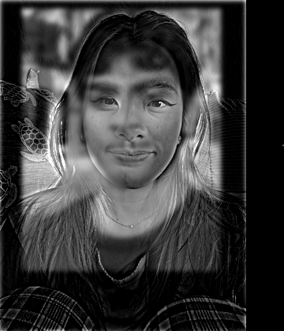
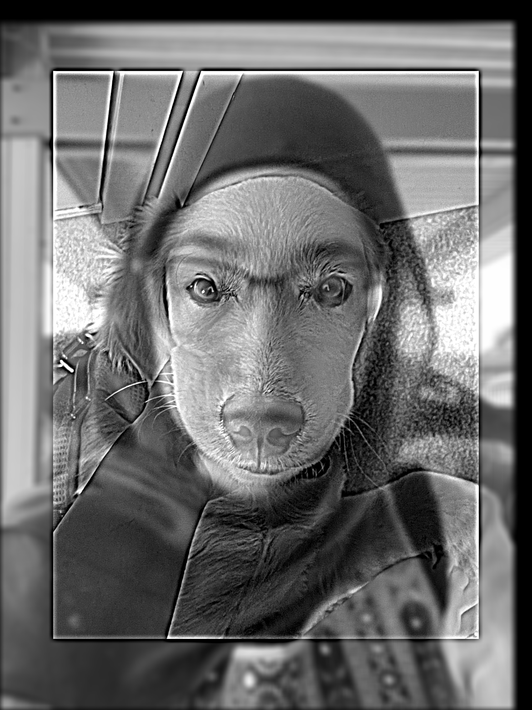
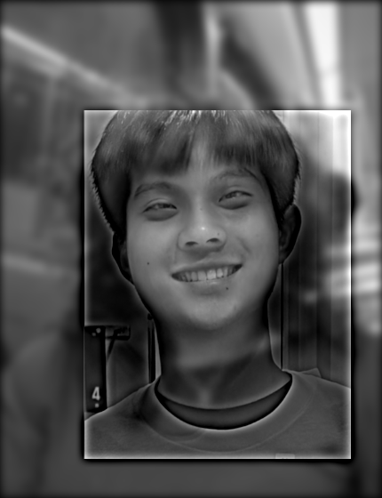
At close viewing distance, the high-frequency component dominates perception, while from farther away the low-frequency component becomes more apparent. This makes the hybrid image appear to switch interpretation as the viewing distance changes.
Part 2.3: Gaussian and Laplacian stacks
To prepare for multi-resolution blending, the notebook implements Gaussian and Laplacian stacks without downsampling. Each level is a blurred version of the prior one, while the Laplacian stack retains the band-passed detail between consecutive Gaussian levels.
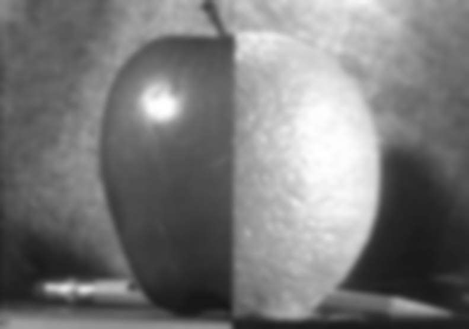
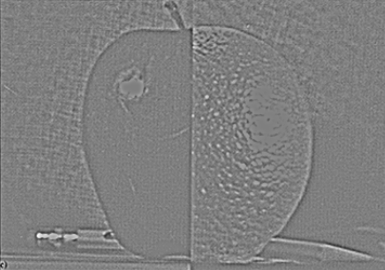
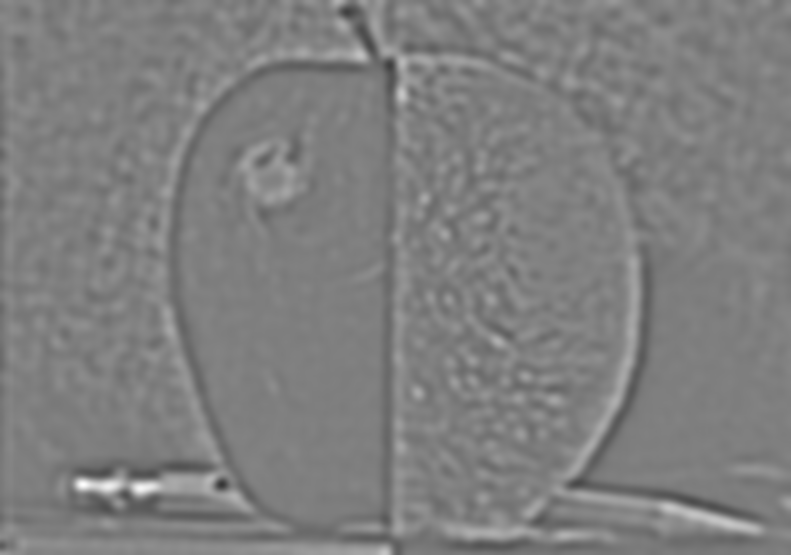
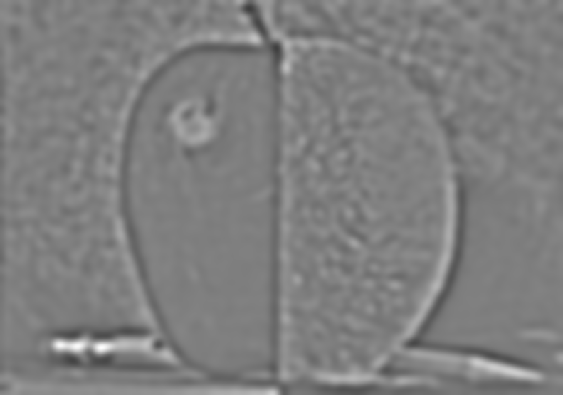
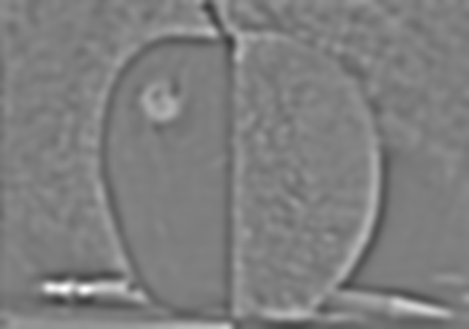
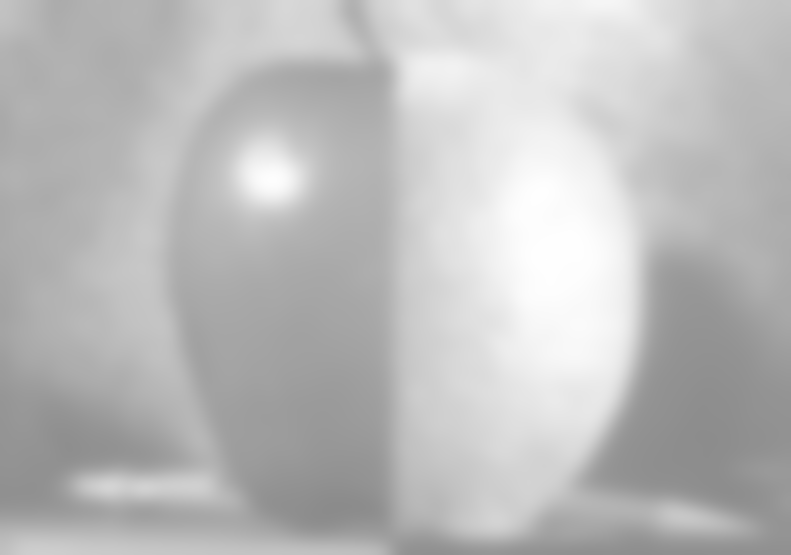
These stacks are the core building blocks for multi-resolution blending: the low-frequency band carries smooth structure, while the higher-frequency bands preserve local detail and texture.
Part 2.4: Multiresolution blending
The final section of the assignment brings together the Gaussian and Laplacian stack ideas into a seamless image blend. Instead of cutting two images together at a hard boundary, the notebook’s multiresolution strategy blends them at different frequency scales. The smooth mask is blurred with a Gaussian stack so the seam fades gradually rather than appearing as a visible line.
mask = np.zeros_like(img1)
mask[:, mid:] = 1
mask_blurred = convolve2d(mask, G, mode='same', boundary='symm')
for i in range(len(L1)):
blended_level = L1[i] * mask_blurred + L2[i] * (1 - mask_blurred)
result_levels.append(blended_level)
blended = sum(result_levels)This is the core idea behind the “oraple” result: each frequency band is weighted according to the mask, and the seam is softened at all scales. The effect is much more natural than a direct cut-and-paste.
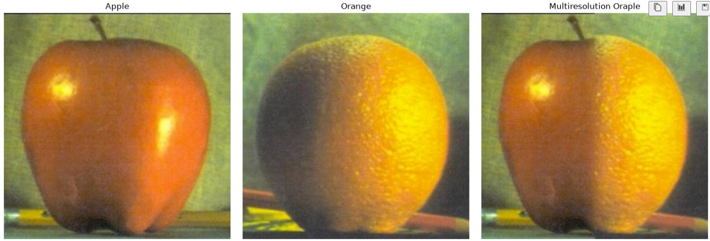
Low-frequency content changes slowly, so it can be blended over a wider transition. High-frequency content carries edges and texture, so it is mixed more cautiously. This makes the seam look smooth while preserving structure from both images.